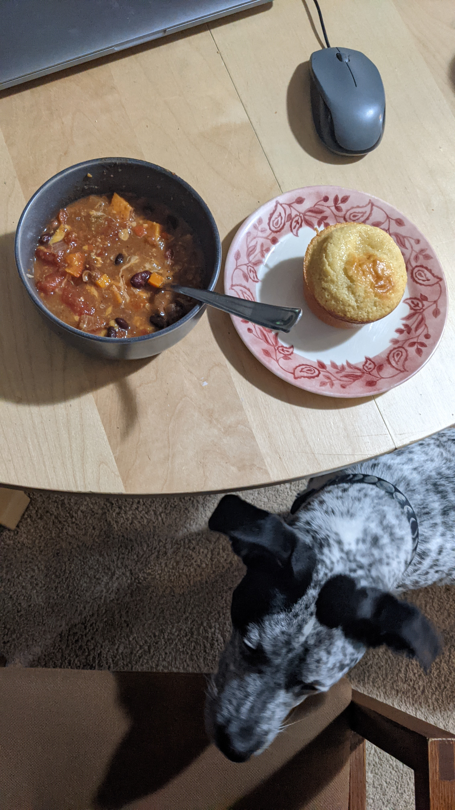

Sweet Potato Chili

Description
This recipe is adapted from this recipe from Minimalist Baker
This simple but flavorful chili is one of my favorite dishes to make in the colder months. This will save for a week, and will even become more flavorful! I like to eat it with homeade cornbread muffins, but it's great on its own.
Ingredients:
- 1 medium yellow onion, diced
- 4 cloves garlic, minced
- 1 small jalapeno, diced (keep seeds)
- 1 large red bell pepper, diced
- 1 medium sweet potato, cubed
- 3 Tbsp chili powder blend
- 2 Tbsp ground cumin
- 1 Tbsp smoked paprika
- 2 15-oz cans diced tomatoes
- 2 Tbsp tomato paste
- 2 15-oz cans kidney beans
- 1 can black beans, drained
- 1.5-2 cups vegetable broth
Steps:
- In a large pot, Saute onion, garlic, jalapeno, and red bell pepper in olive oil.
- Add sweet potato, chili powder, cumin, and smoked paprika, and stir. Add broth, tomatoes, beans, and a healthy pinch of salt and pepper.
- Bring mixture to a low boil. Once bubbling, reduce to a simmer and cover to cook for 30-45 minutes.
- Taste and adjust flavors as necessary.